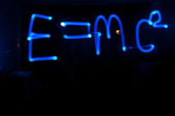

Time, tense and aspect

If you feel comfortable with the following concepts ...
- time, tense and aspect
- perfect, progressive, continuous, habitual, iterative, durative and prospective aspects
- the distinction between progressive and continuous aspects
- the distinction between stative and dynamic verb use
- perfective, perfect and imperfect verb forms
- telic and atelic clauses
- finite and non-finite verb forms
... then feel free to use this index to go to the area that interests you.
| Talking about the Present | Talking about the Past | Talking about the Future | Talking about Always |
Otherwise, read on ...
Clearing some conceptual decks |
Before we can look at tense forms, meaning and use in English, we have to get four things clear:
- Time:
- This is a non-linguistic concept of when
an action or a state is set. It is non-linguistic
because the relationship between time and grammatical form is
often unclear with past forms used to speak about the future,
future forms appearing in the past and so on.
Traditionally, we have four choices:- Now: the action / state is in the present
- Past: the action / state occurred before the present
- Future: the action / state will occur after the present
- Tense:
- This is the name we give to the form the verb takes. It refers to the form of the
verb and the grammatical function of any primary auxiliary verbs
involved. In English it is often averred that there are just
two:
- Past tense: e.g., made rather than make
- present tense: e.g., comes rather than came
- but we'll add a third because English most certainly does exhibit future forms (such as will go rather than goes) even if it has no 'proper' future tense signalled by an alteration in the form of the main verb as many languages do (and many don't)
- Aspect:
- this refers to how the user
of the language views the event or how the event is experienced. There are many
of these and they are signalled in languages in a bewildering
number of ways. For the purposes of analysing English
verb form, meaning and use, we'll focus on:
- perfect: relating two times (past to pre-past, present to pre-present, future to post-future)
- progressive: ongoing
- continuous: current
- habitual: routine
- iterative: repeated
- durative: long lasting
- prospective: looking forward
- Modality
- The expression of the future is often allied to modality because, by
definition, the future concerns expressions of willingness,
uncertainty or duty.
Modality concerns the view that the speaker / writer wishes to convey regarding four key concepts:- the truth or otherwise of a proposition: relating to how
the user of the languages perceives the likelihood of
something being the case. For example, expressing
doubt or certainty.
This is known as epistemic modality, from the Greek for knowledge. E.g.:
That might have been her father - obligation: relating to the language user's
understanding of whether an obligation or its lack is
intended to be expressed. For example, there is an
external obligation, an internal sense of duty, a lack of
obligation or an expression of advice.
This is known as deontic modality from the Greek for being needed. E.g.:
They shouldn't have told you that - ability and willingness: this expresses the language
user's view concerning how possible it is for someone or
something to do what the verb suggests or how willing they
are to do it.
Because of the sense of power and willingness, this is called dynamic modality from the Greek for power. E.g.:
I couldn't safely have driven any faster - necessity: concerns the language user's view of a sense
of inevitability so any statement which implies an
unavoidable logical conclusion falls into this category.
Essential truths about the workings of the natural world or
concepts of definitions of states fall into this category.
It is called alethic modality from the Greek for truth.
If it was the colour you described, it must have been a buzzard
- the truth or otherwise of a proposition: relating to how
the user of the languages perceives the likelihood of
something being the case. For example, expressing
doubt or certainty.
Here's the cut-out-and-keep guide to summarise this.

Modality is not included in what follows because that is covered elsewhere in the section dedicated to modality which you can go to here.
 |
Some examples to make this clear |
| Example | Time | Tense | Aspect |
| That'll be the postman | Now | Future simple | Continuous |
| he is here now | signalled by ''ll' | he is standing outside the door | |
| I have always arrived on Sunday | Always | Present perfect | Habitual |
| signalled by the adverb | signalled by the form of the verb and the auxiliary | this is a routine | |
| He thinks so | Now | Present simple | Continuous |
| this is his present state of mind | signalled by the -s inflexion | this is a current state | |
| John is writing a book | Now | Present | Progressive |
| this is one of his current occupations | signalled by is | this is an ongoing action | |
| John is always banging on about it | Always | Present | Iterative |
| signalled by the adverb | signalled by is | a repeated action | |
| Murray hits a backhand down the line | Now | Present | Progressive |
| commentary on current actions | signalled by -s | describing an action in progress | |
| I have finished | Present | Present perfect | Perfect |
| describing a current situation | signalled by the form of the verb and the auxiliary | the present related to the past | |
| I leave tomorrow | Future | Present | Simple |
| signalled by the adverb | signalled by base form of the verb | a one-off event | |
| I was staying at the Ritz then | Past | Past | Durative |
| signalled by the adverb | signalled by the auxiliary | the state went on for some time | |
| He's going to fall | Future | Present | Prospective |
| signalled by the context | signalled by the verb form | event after now | |
| What will you do if she doesn't arrive? | Future | Present | Simple |
| signalled by the if-structure | signalled by -s | a one-off event | |
| What would you do if she didn't arrive? | Future | Past | Simple |
| signalled by the if-structure | signalled by didn't | a one-off event |
We can see from even this short list, that time, tense and aspect do not exist in a one-to-one relationship. Tenses are not, formally, tied to time and aspect is not always signalled by formal changes in the verb.
 |
The confusion between progressive and continuous |
| I think they're talking nonsense |
It is unhelpful to assume that continuous and progressive are
simply alternative words for the same aspect. We may, somewhat
loosely, call the tense form something like present / past /
perfect etc. continuous but when we consider aspect, we need to be a little
more careful.
Nevertheless, it is true that in English little distinction in verb
forms is made between continuous and progressive aspects so, for
example:
John is working at his desk now
is progressive insofar as it refers to an action in progress, and
I am staying at The Ritz
is continuous insofar as it refers to a background state rather than
an action currently in progress.
As we shall shortly see, both these aspects can be realised through
apparently simple forms of the verb, although the
construction with the primary auxiliary be and the present
participle is the most common choice.
It is important that teachers of English are aware that other
people's languages may reserve explicit verb forms to distinguish
between progressive and continuous aspects.
- Continuous aspect
- describes a current state of affairs such as, e.g.:
I believe in fairies
He loves me
He is loving the attention
He hated me
We are on holiday
She is living in a guest house
etc.
The clue is in the name – the aspect refers to the speaker's perception that something is a continuing state of affairs.
The continuous aspect does not always require the auxiliary + -ing. It can be inherent in both the simple form and the auxiliary + -ing forms of the verb. This is especially true, of course, with verbs such as think, believe, understand, like etc. which contain the sense of the continuous semantically. - Progressive aspect
- describes an ongoing action such as
I'm typing this sentence
He runs the length of the field and scores
She is taking liberties
We were eating in my favourite restaurant
etc.
The clue is in the name – the aspect refers to the speaker's perception that something is in progress at the time of speaking, i.e., an ongoing action.
Notice, again, that the progressive aspect does not always require the auxiliary + -ing. It can be inherent in both the simple form and the auxiliary + -ing forms of the verb. For example
Look, I now turn over the paper and there is the shape
Here she comes!
I acknowledge receipt of your letter
The progressive aspect of the verb can also signal a background event which is perceived as taking place in the present but is not necessarily something being done right this minute.
Compare, for example:
She is studying French at university
which could imply right this minute but probably refers to a background event. She may not, at the time of speaking, be anywhere near the university in question.
with
She's in the garden, pulling up weeds
which, because of the nature of the act and the prepositional phrase, almost certainly does refer to the present moment.
 |
 |
The confusion between stative and dynamic |
Much of the confusion evident in describing verbs as either stative or dynamic arises from the inability to distinguish between continuous and progressive aspects.
There is a distinction between, e.g.,
I am thinking
and
I think that ...
It is the distinction between the progressive aspect (I am
thinking) and the continuous aspect with a simple verb form (I
think). In the second of these, the verb is akin to believe (i.e., a
continuous state of mind) and
in the first, it describes an ongoing (that is to say progressing) action or process.
For this reason, if no other, it makes sense to speak of stative vs. dynamic uses of verbs.
Many other languages make no such distinctions between these uses of verbs and the expressions I go and I am going or I think and I am thinking are indistinguishable. English is not unique but it is slightly unusual.
  |
The confusions between perfective, imperfective and perfect |
There are three concepts here:
- perfective
- is the term used to indicate that an event or state is
completed. For example,
I went to Margate last Thursday
is a perfective form which may or may not have present relevance but is clearly finished.
Napoleon died in 1821
is another example of a perfective form in English.
I have given up smoking
is also a perfective form (because the action is completed) which happens to be in the perfect aspect as well, in this case because it has direct relevance to the present.
The perfective can be contrasted with the ... - imperfective
- which is the term that indicates an event is not completed.
Examples are:
She was playing tennis with John
I have lived here all my life
In neither case is the event perceived as finished. The form of the verb is described as imperfect. - perfect
- is the term used to signify an imperfective or perfective which
has a certain tense structure.
For example,
I have been to America
is a perfective (the act of going to America has been completed) but is a perfect tense indicating a present relevance of some sort.
I have lived here all my life
is imperfective (but still a perfect form) because it also signifies some present relevance (in this case that the state is probably (not certainly) current).
The perfect is, in English grammar, contrasted with the simple.
Many other languages, again, make no such distinctions between
these uses of verbs and the expressions I went and I
have been are indistinguishable. English is not unique
but it is slightly unusual.
Some languages are much clearer about perfective and imperfective
forms. For more on other languages, see
the guide to aspect.
 |
Telicity |
This is a related phenomenon in languages.
The term telic comes from the Greek,
τέλος, meaning end.
The concept of telic and atelic verb phrases concerns whether an
activity is seen as finished or unfinished. To grasp the
point, compare:
- I read the book for an hour
- I read the book in an hour
Sentence 1. suggests that I did not finished the book so
the verb phrase is atelic.
Sentence 2. suggests that I finished the book so the verb
phrase is telic.
This matters in English because we can say:
I was reading the book for an hour
but we cannot have:
I was reading the book in an hour.
The implication for English grammar is that verbs in the perfect
or continuous aspects are almost always possible with a time
frame
adverbial but not with a time span adverbial so. In other
words, perfective forms, which are by definition telic, generally
imply a time frame (even when it is not stated) but not a time span.
For example:
I had been reading for an hour
vs.
*I had been reading in an hour
or
I was cycling for a week
vs.
*I was cycling in a week
or
I have lived here for a year
vs.
*I have lived here in a year
or
I was reading when the telephone rang
vs.
*I read when the telephone rang.
The situation is complicated by the fact that verbs are generally telic or atelic depending on their meaning so the phenomenon of telicity is as much semantic as grammatical. For example:
- I finished the book in an hour
is telic by its meaning, because the adverbial refers to a time span, and - *I finished the book for an hour
is not possible because the adverbial refers to a time frame rather than a span. - I was cooking when the telephone rang
has the atelic verb cooking which is imperfective and the perfective rang which clearly had an end point so is telic. Compare: - I cursed when the telephone rang
in which both verbs are telic and perfective.
Some languages, for example Finnish, Estonian, Czech and Hungarian, reserve a special verb form to signal telicity but English often does it through tense aspects.
|  |
Relative and absolute tense forms |
Here, we depart slightly from a traditional description of tense forms in English and take a more functional view of what the forms actually do and the meanings they realise.
- Absolute tense forms
- These locate an event in time relative to the here and now,
i.e., the time of speaking or writing. For example:
She will take the 6 o'clock train
sets her action as lying in the future from now.
She caught the 6 o'clock train
sets her action in the past seen from now
She is getting on the 6 o'clock train
sets her action in the present
She was sitting on the train
sets the continuous state in the past
She will be sitting on the train
sets the continuous state in the future - Relative tense forms
- These take it a step further and relate what is happening
relative to an absolute tense. For example:
She has caught the train and is working on her laptop
sets the present (working) in relation to a past event (getting on the train)
She had caught the train and was working on her laptop
sets the past (working) in relation to the pre-past (getting on the train)
She will have finished by the time the train gets to London
sets the future (finishing) in relation to the a post-future (getting to London)
Relative tense forms do not stop there. For example:
She was sitting on the train, reading a book
is absolute in the sense that the events are fixed in time relative to the present as we saw above.
However,
She was sitting on the train when the she realised her mistake
sets the realising in relation to a background event and
She had been going to work but had forgotten her laptop
sets the working as a future in the past (although one that did not happen).
An alternative way of seeing these forms is to consider what is being expressed in terms of time and the relationships between events and states, like this (following Lock, 1996: 149):
| Time | Example | Explanation of the concept | Visualised green for present orange for past blue for future |
| The present in the present | He is working in the garden | The verb form refers to now set relative to now |
|
| The past in the present | He has worked in the garden | The verb form refers to pre-now in relation to now | |
| The present in the past | He was working in the garden | The verb form refers to the present set in the past |
|
| The past in the past | He had worked in the garden | The verb form refers to the pre-past set in the past |
|
| The present in the future | He will be working in the garden | The verb form refers to the present set in the future | |
| The past in the future | He will have worked in the garden | The verb form refers to the past set in the future |
|
| The future in the present | He is going to work in the garden | The verb form refers to the future set in the present | |
| The future in the past | He was going to work in the garden | The verb form refers to the future set in the past |
|
Seen this way, complex tenses which combine aspects can be explained conceptually. Like this:
| Time | Example | Explanation of the concept | Visualised green for present orange for past blue for future |
| The present in the past in the present | He has been working in the garden | The verb form sets the present in the past set in the present |
|
| The present in the past in the past | He had been working in the garden | The verb form sets the present in the past set in the past |
|
| The present in the past in the future | He will have been working in the garden | The verb form sets the present in the past set in the future |
|
| The future in the past in the present | He has been going to work in the garden | The verb form sets the future in the past set in the present |
|
| The future in the past in the past | He had been going to work in the garden | The verb form sets the future in the past set in the past |
|
| The future in the future | He will be going to work in the garden | The verb form sets the future in the future |
|
| The future in the past in the future | He will have been going to work in the garden | The verb form sets the future in the past set in the future |
|
The visualisation in colour on the right of these tables appeals to some learners. Do not present them all at once!
A third way to consider the forms is to view them from the point
of view of telicity (see above).
Relative tense forms, often, refer to atelic forms so, for example:
He will have been travelling for 24 hours
is atelic because there is no obvious end point to the activity, but
He will travel for 24 hours
or
He will be travelling for 24 hours
is telic because the presumption is that he will stop travelling
after the 24 hours is up.
Finite and non-finite forms |
In these guides, we are mostly concerned with finite verbs forms
(i.e., those marked in some way for person or tense). There is
a guide to
finite and non-finite forms on this site.
It should not be forgotten that non-finite forms can also signal
aspect, even if they do not signal time or tense. For example:
| Forms | Meaning | Aspect |
| Feeling rather shy, he put his hand up | At the time he felt shy and at the
time he put up his hand: two processes, one continuous (the feeling) and one instant (the action) |
continuous and simple |
| Being rather a tall man, he reached it easily | Two verbs, one a permanent state (tall), the other an action (instantaneous) | continuous and simple |
| Arriving at station, he realised he was late | Two simple actions (arriving and realising) | simple |
| If you will just hear me out | Two verbs (one apparently future but actually present and referring to willingness), the other an infinitive (non-finite) | simple |
 |
Moving on |
If the distinctions above are clear to you, it's time to look at the ways English refers to time and the speakers' perceptions of time.
To check that you have taken this on board, try a test.
 |
Guides to times, tenses and aspectsIn what follows this site takes a somewhat alternative view of tense grammar. |
Many grammars, especially those aimed at students, start with the name of the tense, explain its formation and then list the ways in which it is used and the meanings we make with the forms. It works along the lines of, e.g.:
The present progressive is formed by
taking the appropriate present tense form of the verb to be, and
following it with the -ing form of the verb (omitting a
final 'e' if it is present) so we get, He is having lunch with
his mother.
We use this tense to talk about current
actions in progress, temporary states, the arranged future and ... etc.
That is familiar to most learners and teachers and may be
reassuring. However, it is a non-functional way to proceed.
It is non-functional because it presumes a mental process something
like this:

Here, we are going to work the other way: we will start with the
meanings we want to make and identify the major ways to make these
meanings using verb forms and their aspects.
This assumes a mental process more like:

In these guides, the assumption is that you know (and can teach) how the tenses and aspects are formed. We are only considering meaning and function.
Here's the list. Click on the area that interests you.
| Talking about the Present | Talking about the Past | Talking about the Future | Talking about Always |
Reference:
Lock, G, 1996, Functional English Grammar, Cambridge:
Cambridge University Press